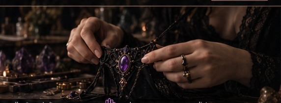
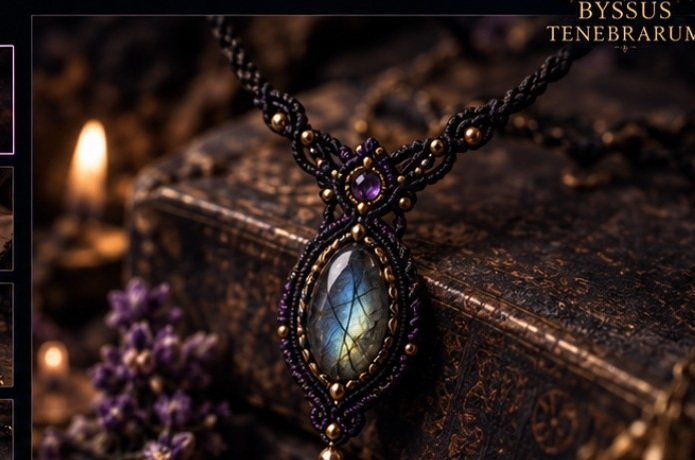

Des bijoux et parures en micro-macramé où le fil devient langage : sombre, romantique, mythologique et sensuel, sans sacrifier le confort ni la réalité artisanale.
Une esthétique alternative qui parle aussi bien au quotidien qu’aux moments plus rituels.
Des pièces réellement réalisables, pensées pour être portées.

Choisissez le type de pièce, la zone du corps, la pierre, la couleur et le niveau d’ornement. Le configurateur transforme vos choix en brief clair pour une proposition personnalisée.
Démarrer ma créationChaque prototype doit d’abord être confortable, ajustable, entretenable et cohérent avec les contraintes du port. Les grandes parures sont développées progressivement, à partir de structures simples maîtrisées.
Découvrir l’atelier